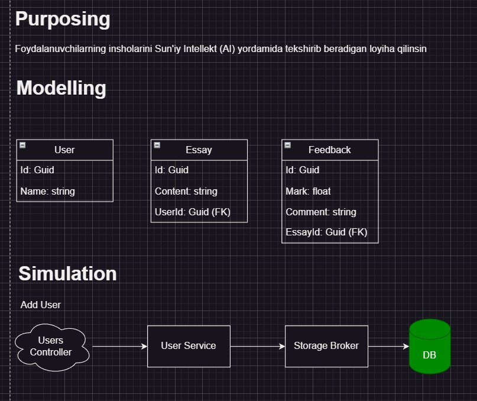

Advanced .NET
Let's grab a coffee

Savollarga javob berish
- ---dbms
- 1. What is SQL?
- 2. What is DBMS?
- 3. What is Key?
- 4. What is Composite Key?
- 5. What is index?
- 6. What types of indexes do you know?
- 7. What is clustered index? Non-clustered?
- 8. What is database integrity?
- 9. What is transaction?
- 10. What is View, Function and Stored Procedure?
- 11. What are normal forms? 1NF?
- 12. What is execution plan?
- 13. What is SQL Profiler?
- DBMS Project
- 1. Install MS SQL Server Management Studio
- 2. Create school database in sql language
- 3. Create students table
- 4. Insert students (sql insert statement)
- 5. Do the rest CRUD operations
- 6. Wrap those operations in stored procedures (use print())
- 7. Call stored procedured
- 8. Create clustered index for firstname + lastname of student
- 9. Find and show exection plan?
- 10. Use SQL Profiler
- create database [school]
- create table [dbo].[Students] (....)
- insert into [dbo].[Students] (...)
Loyihani maqsadini aniqlash va modellashitirish, Intro to The-Standard, Principles, Purposing, Modeling, Simulation
vazifa
Qo'shimcha
Savollarga javob berish
- 1. What is ERD?
- 2. What is Foreign Key?
- 3. What is Primary Key?
- 4. What is Self-Referencing Foreign Key?
- 5. What are primary vs secondary models?
- 6. What relationships do you know among SQL Tables?
- 7. What is ORM?
- 8. What is SQLite?
- 9. How to use SQLite in .NET apps?
- 10. What is CRUD? How to do in using EF core?
- Foydalanuvchilarning insholarini Sun'iy Intellekt (AI) yordamida tekshirib beradigan loyiha qilinsin
1 C# orqali
Ma'lumotlar bazasi yaratish
2 C# orqali
Ma'lumotlar bazasi yaratish Modeling
Migrating
vazifa
Qo'shimcha
Savollarga javob berish
- --- the standard
- 1. What is purposing?
- 2. What is modelling?
- 3. What is simulation?
- 4. What is broker? What types of brokers are there? What is the difference?
- 5. What is storage broker? Is it repository pattern?
-

Yuqoridagi rasm bo'yicha Essay va Feedback modellari uchun kerakli methodlarning simulyatsiyasini chizib chiqing Storage Brokerda u methodlarni yaratib chiqing. Team Standard reposini o'qib commit qilish qoidalari bo'yicha githubga joylang. PR orqali masterga qo'shish SHART
{kind=link}
- STX.EFxceptions.SqlServe
Savollarga javob berish
- 1. What is Object Filler? vs Bogus?
- 2. What is Fluent Assertions?
- 3. What is TDD? or Read-Green Refactor?
- 4. What is Moq?
- 5. Why randomize Unit Test parameters?
- 6. What is Unit Tests? Why we need them?
- 1. CRUD operations for storage broker for all models should be complete
- 2. Add operation for all models should be complete. All use-cases
Savollarga javob berish
- 1. What is localization and categorization in Exception handling in Standard?
- 2. What is circuit-breaking and non-circuit breaking validations?
- 3. What is delegate? Func<>, Expression? Action<>? Predicate?
- 4. [Fact] vs [Theory] test?
- Complete validation use-case tests in your projects
- Qo'shhimcha ma'lumotlar o'qish
- Qo'shhimcha ma'lumotlar o'qish
- Qo'shhimcha ma'lumotlar o'qish